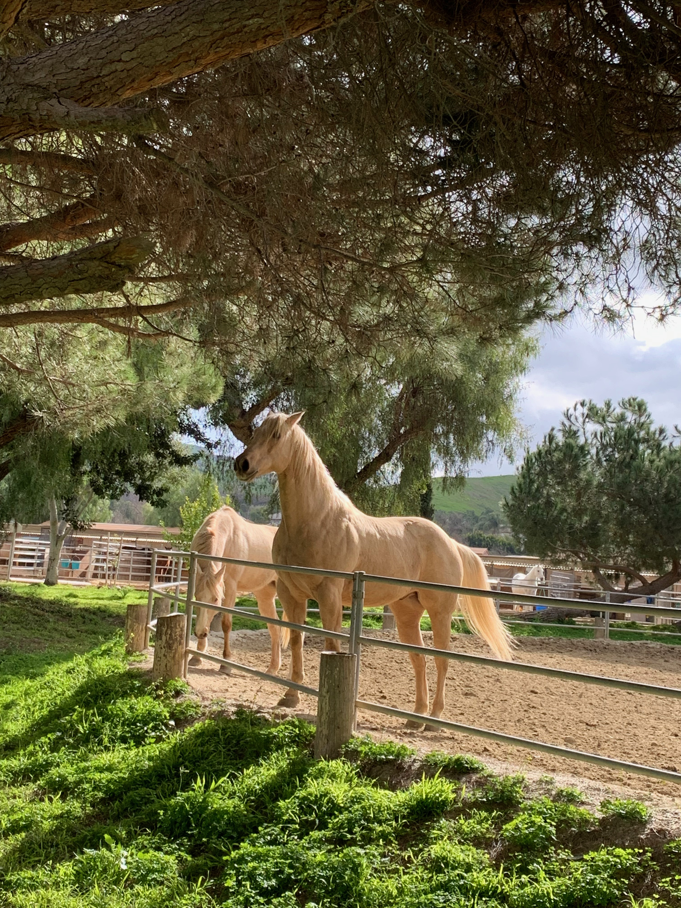
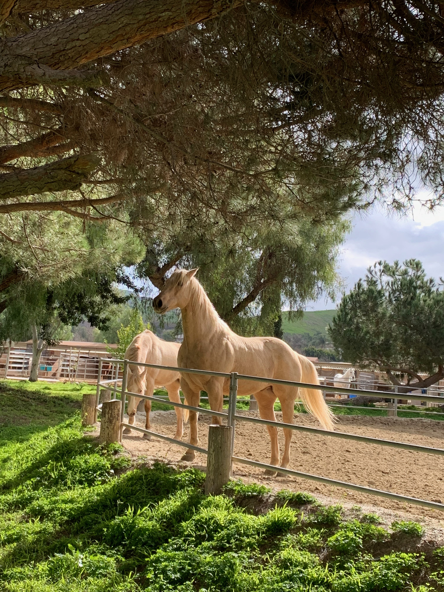

About me -
Hello and welcome to my website! My name is Ilya, I'm 15 years old and the paint horse in the upper right is Arrow. I've been riding for three years with Joe Cunningham at Bay Breeze farm. He is an amazing coach and has taught me a ton. I'm in 4-h and I show Arrow throughout the year. A while ago my friends and I decided to start a stall mucking business with the goal of helping out around the island and gaining Experience. Mucking for other people and spending time with their horses was so fun and when some of my clients trusted me to do the feeding it came to my attention that there are a lot of people on Vashon who need horse sitters, someone to feed, groom and muck while they enjoy a break.
My services -
During all jobs I provide mucking, feeding, refilling water troughs and grooming. Please note I will not be riding your horse under any circumstances. I am perfectly confident and comfortable around horses, I have dealt with many spooks and bucks but for liability reasons choosing not to offer riding services makes the most sense. That being said, I know that leaving your horse with someone you don't know yet can be scary and I urge you to reach out to me if you have any questions, my phone number is: 206-637-7765. Please text rather than call. If you are still unsure I have a reviews section at the top that I hope you take a look at.
Cost -
I charge per visit whether I'm mucking or watching horses. It's $30 per trip. This is calculating the cost of gas and my time. Typically I will spend at least an hour there depending on how much help you require.


 
